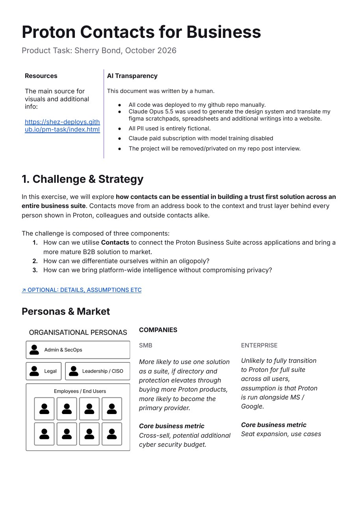

Trusted Contacts
Appendix and interactive mockup for Product Management task at Proton.
01 / Start here
The write-up and how the ideas were prioritised
PDF · 4 pagesWrite-up
Get the document
The finished write-up as a PDF, to read or share.
Open PDF
Prioritisation
Backlog
All 27 feature ideas in one table: what each does, who it's for, privacy fit, effort and recommendation.
Open the backlog
Prioritisation
Impact / Effort
Every idea scored 1–10 on impact and effort, with filters by priority and a brief for each feature.
Open the matrix02 / Mockups
Interactive, with fictional data

MVP · the focus
Trusted Contacts
One place for everyone you work with, built on your device from your own mail. A contacts list with quick summaries, and a full-screen contact card with your history and the signals that show who is genuine.
- Contacts overview: company, groups, last contact and trust for everyone, with a hover summary.
- Contact card: emails, meetings, files and notes with that person across the suite.
- Trust signals you can read, and suggested contacts ranked by confidence.
Protection
AdditionalWhat the same contact data makes possible next: warnings for look-alike senders and for emails about to go to the wrong person.